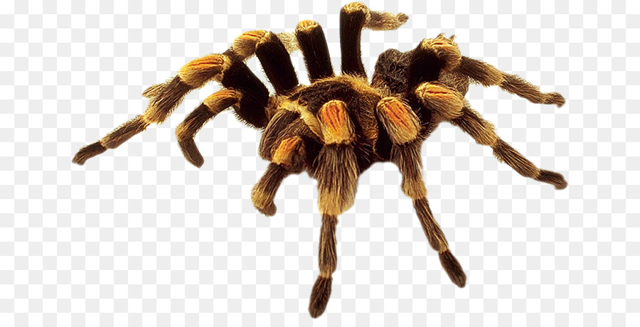
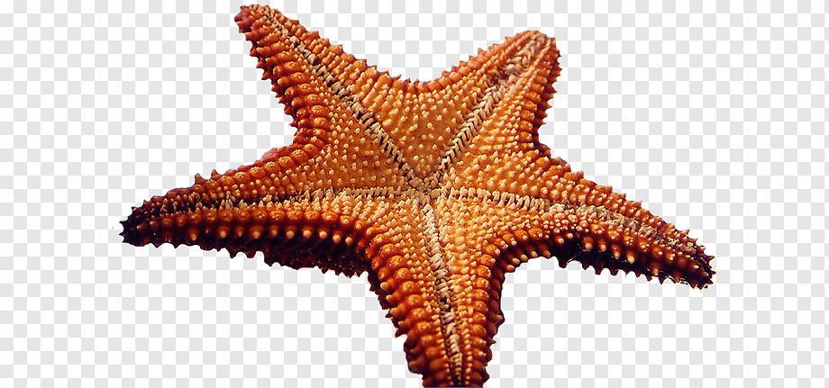
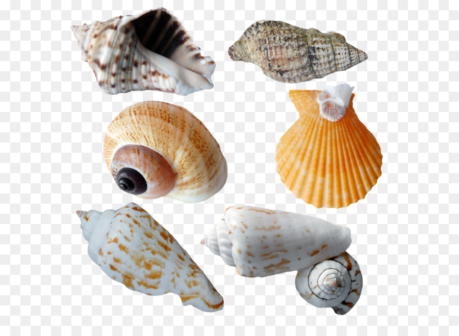
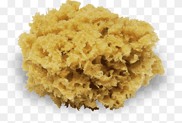
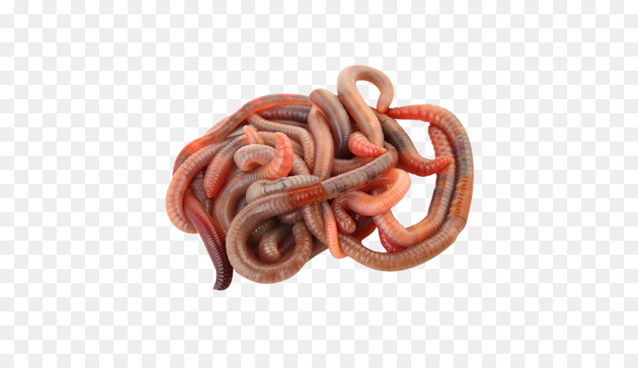

Exoesqueleto de quintina y patas articuladas
Simetria pentarradiada,esqueleto externo de piezas calcareas.
Los moluscos son un grupo de invertebrados que constituyen uno de los filos más importantes y con mayor número de especies dentro del reino animal
Las esponjas de mar son animales invertebrados, a pesar de su forma más parecida a la de un vegetal.
Son vulgarmente mencionados como gusanos pequeños, de unos 0,2 mm, y suelen ser desconocidos por muchos agricultores, achancando algunos problemas originados por estos organismos a otro tipo de enfermedades o plagas
